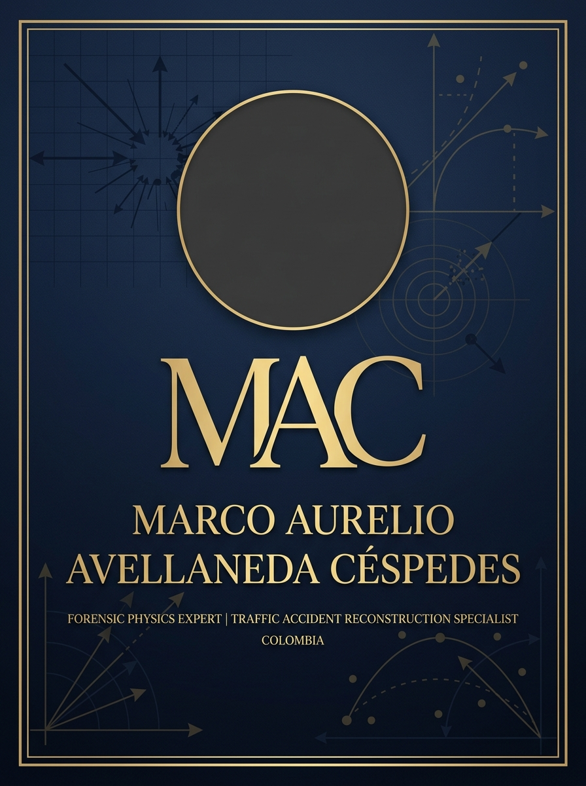

Iniciando sistema…
Derecho · Ciencia · Inteligencia Artificial
Dos perspectivas convergentes —jurídica e ingeniería aplicada— en la vanguardia de la inteligencia artificial, el derecho y la ciencia forense en Colombia.
Abogado · Investigador · Derecho Comercial & IA
Universidad Externada de Colombia
Físico Forense · Perito · Reconstrucción Analítica
Universidad Nacional de ColombiaPerfiles Profesionales
Formación académica rigurosa y experiencia profesional aplicada a los retos del derecho y la ciencia contemporáneos.
Abogado · Magíster en Derecho · Investigador en Derecho Comercial e Inteligencia Artificial
Abogado con maestría en Derecho Comercial, con una trayectoria consolidada en el análisis crítico de las intersecciones entre el ordenamiento jurídico colombiano y las tecnologías emergentes. Su ejercicio profesional abarca el derecho de los negocios, la regulación de nuevas tecnologías y la aplicación de la inteligencia artificial en contextos jurídicos de alta complejidad.
Como investigador vinculado a la Universidad Externada de Colombia —una de las instituciones jurídicas más prestigiosas de América Latina—, ha desarrollado líneas de investigación en responsabilidad civil, contratos electrónicos y gobernanza algorítmica.
Físico · Magíster en Ciencias · Perito en Reconstrucción Analítica de Accidentes de Tránsito
Magíster en Ciencias – Física de la Universidad Nacional de Colombia, especializado en la aplicación de modelos físicos para la reconstrucción analítica de accidentes de tránsito (RAAT). Su tesis magistral —"Física forense: Estudio de modelos físicos de RAAT aplicados en procesos de responsabilidad penal, civil y administrativa"— es referencia académica en el campo de la ingeniería forense colombiana.
Vinculado al grupo de investigación Propiedades Ópticas de los Materiales (POM), aplica los criterios Daubert y la Sana Crítica para garantizar el rigor científico de la prueba pericial ante los tribunales colombianos.
Línea de Tiempo
Los hitos más relevantes de cada carrera, desde la formación hasta la práctica de vanguardia.
Estudios de pregrado en Derecho — Universidad Externada de Colombia.
FormaciónPráctica en derecho comercial, corporativo y asesoría empresarial.
PrácticaPosgrado con énfasis en derecho de los negocios, contratos y regulación comercial avanzada.
PosgradoCátedras en derecho comercial y nuevas tecnologías en instituciones universitarias de Colombia.
DocenciaLíneas investigativas en inteligencia artificial aplicada al derecho, gobernanza algorítmica y contratos inteligentes.
InvestigaciónAsesoría especializada en tecnologías emergentes, protección de datos, responsabilidad algorítmica y derecho de la IA.
ActualidadIntensidad relativa de cada perfil en las principales dimensiones de su actividad.
Producción Académica
Líneas de trabajo que convergen en la frontera entre el derecho, la ingeniería y la inteligencia artificial.
Análisis jurídico de la regulación de sistemas de inteligencia artificial, responsabilidad en algoritmos de decisión automatizada y marcos legales para la economía digital en Colombia y América Latina.
Validez, eficacia y responsabilidad en contratos inteligentes (smart contracts), comercio electrónico y contratación mediada por plataformas digitales.
Tesis Magistral (2022). Estudio sistemático de modelos físicos para la reconstrucción analítica de accidentes de tránsito en procesos de responsabilidad penal, civil y administrativa.
Aplicación de los criterios Daubert y la Sana Crítica en la valoración de pruebas periciales técnicas y científicas ante los tribunales colombianos, con énfasis en biomecánica y física del impacto.
Convergencia entre el análisis jurídico y la física forense para el diseño de sistemas de apoyo a decisiones judiciales basados en inteligencia artificial, con énfasis en accidentología vial.
Análisis transdisciplinar sobre estándares científicos en la producción, valoración y contradicción de la prueba técnica en el sistema acusatorio colombiano.
Labor Formativa
Formación de nuevas generaciones de juristas, científicos e investigadores con perspectiva crítica e innovadora.
Docente de Cátedra Universitaria
Investigador & Formador en Física Aplicada
Colaboración Interdisciplinar
Puntos de confluencia entre el derecho aplicado, la ciencia forense y la inteligencia artificial.
Articulación entre el rigor científico de la física forense y el marco normativo de la prueba judicial: admisibilidad, valoración y contradicción de evidencia técnica.
Análisis jurídico complementado con reconstrucción físico-analítica para determinar culpabilidad, nexo causal y quantum indemnizatorio.
Diseño y evaluación de sistemas de IA para la valoración de pruebas, predicción de fallos judiciales y automatización de procesos legales.
Integración del método científico —hipótesis, modelo, validación— en la construcción de argumentos jurídicos para litigios de alta complejidad técnica.
Propuesta pedagógica que une abogados y científicos para afrontar los retos del siglo XXI: litigio técnico, regulación de IA y ética en sistemas autónomos.
Marcos deontológicos comunes para el abogado litigante y el perito científico en contextos de alta exigencia probatoria y responsabilidad pública.
Comunicación
Para consultas académicas, colaboraciones de investigación, peritajes o asesoría jurídica especializada.
Abogado · Magíster · Investigador
Físico Forense · Magíster · Perito
Sistema de Gestión de Expedientes Jurídicos
Iniciando sistema…
Dibuja tu firma en el área blanca de abajo
Usa el ratón o tu dedo (pantalla táctil) para firmar